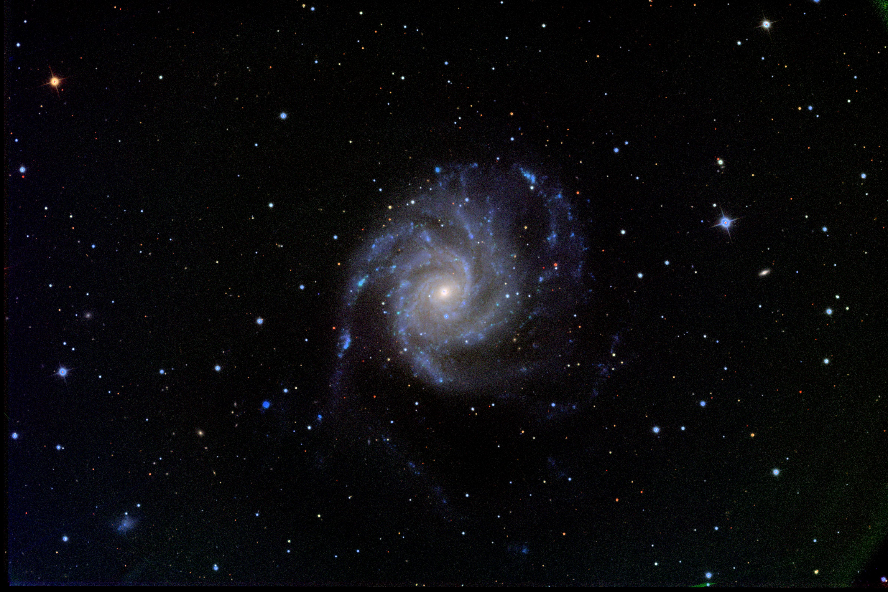
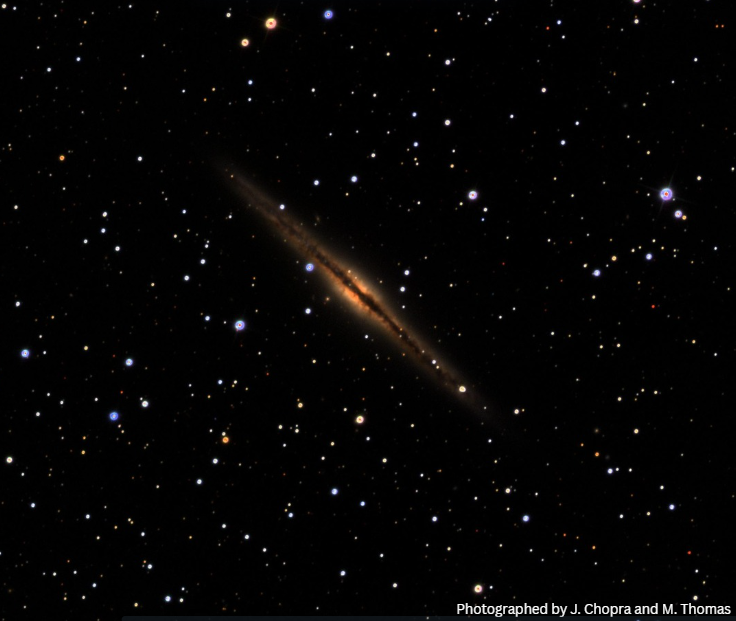
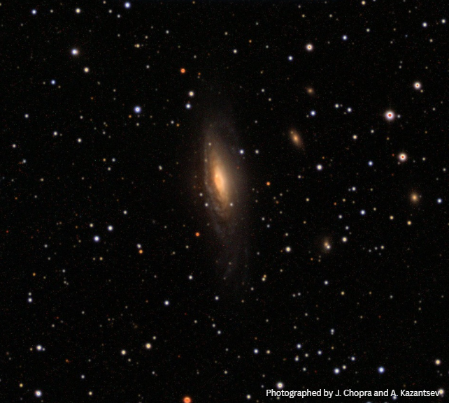
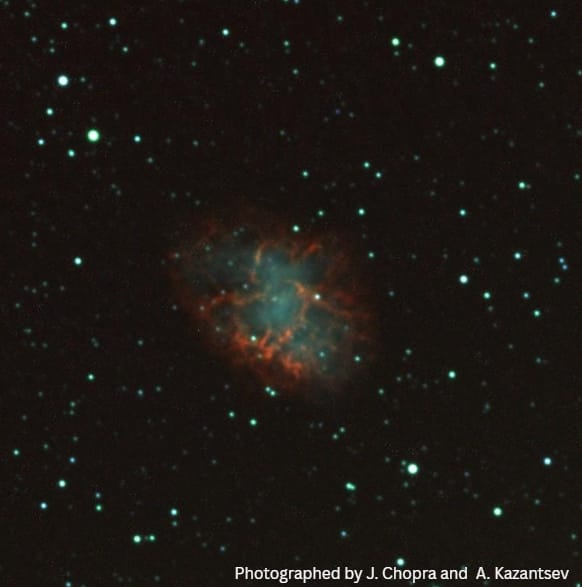

Astrophotography

M101 — the Pinwheel Galaxy
A large, loosely wound spiral, notably asymmetric — likely the result of a past close encounter with one of its satellites. Faint outer arms are always the hardest part to bring out without losing the core.

M51 — the Whirlpool Galaxy
A face-on interacting spiral, paired with its smaller companion NGC 5195. A nice reminder of what my thesis galaxies looked like before they lost that structure.

M81 — Bode's Galaxy
A tightly wound, near-perfect spiral, gravitationally tangled up with M82 and NGC 3077 nearby. One of the sharpest cores I've managed to pull out.

NGC 891 — edge-on spiral
Seen exactly edge-on, with a dust lane splitting the disc in two — one of the clearest ways to see how dust and gas settle into a galactic plane.

NGC 7331 — spiral galaxy
Often nicknamed the Milky Way's twin for its similar size and structure, tilted enough to show off both its dust lanes and its bright bulge in the same frame. Observed along with the supernova 2025rbs -- which can be seen as a bright spot next to the bulge.

M1 — the Crab Nebula
The remnant of a supernova recorded by astronomers in 1054 CE. Hα shows the filaments in the expanding shell.